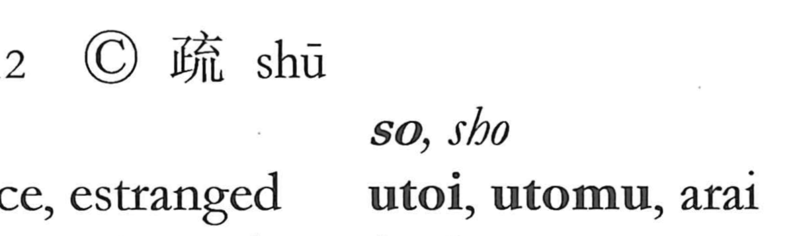

Explanation
This character is a phono-semantic graph whose original form is 疏. In that earlier graph, 疋 serves as the sound-bearing element (sho/so) and also hints at the idea of “passing through,” while a crosshatched component like 爻 suggests the rough weave of coarse cloth. From the image of something passing through a loose, open texture came the sense “to go through without hindrance,” seen in words such as 疏通, and by extension associations with coarseness or rusticity (as in 疏野). The popular form 疎 replaces the weaving element—at times with 充, as in 梳 “comb,” evoking the act of combing through—and it came to emphasize looseness of connection: sparsity, remoteness, and estrangement, as in 疎遠, 疎略, or 疎布. Thus the graph centers on the notion of looseness and things that pass easily through a rough or open mesh, yielding both the concrete image of coarse weave and the abstract senses of being thinly connected or far apart.